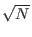

Shor's algorithm is not the only algorithm that seems to be better on a quantum computer than any classical computer for a problem which is considered to be useful. In 1994 L. K. Grover, also of Bell Labs, devised an algorithm to find an item in an unsorted list of N items in .758 operations. No classical algorithm can guarantee finding the item in less than N operations, and in the average case it would take N/2 operations. (Grover)